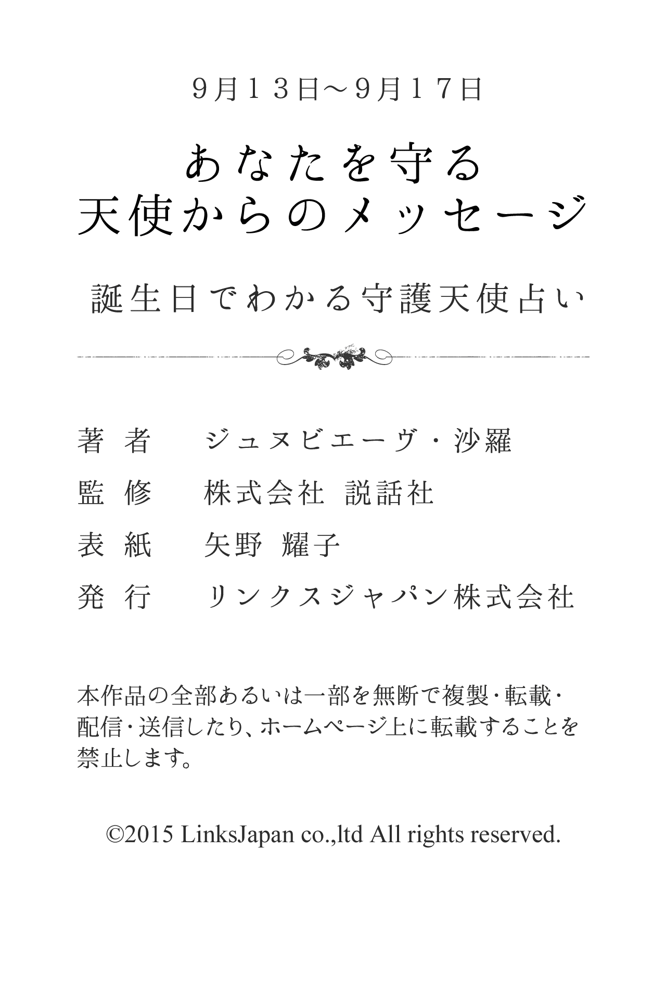

| ９月１３日～９月１７日生まれ あなたを守る天使からのメッセージ 誕生日でわかる守護天使占い (得トク文庫) | |
| ジュヌビエーヴ・沙羅 | |
| (2015) | |

1 、はじめに
「何かに、あるいは誰かに守られている......」
あなたは、そんなふうに感じたことはありませんか？
たとえば、限定発売のお菓子を購入しようと長い行列に並び、最後のたった１つを運良く購入できたり、学生の頃、授業で順々に答えなければいけなくなり、「あー、どうしよう！ 全然わかんないよ」と青ざめて固まっていると、先生があなたを指名しようとした瞬間、終了のベルが鳴り響いたり......
そんなほほえましいエピソードをもつ人もいれば、九死に一生を得るような重大事に遭遇して、心から「助かった！」と安堵のため息をもらした経験を持つ人もいるかもしれません。
そんなとき、あなたが何かに守られているような気がするのは、実は決して気のせいだけではないのです。なぜなら、それは守護天使のおかげだからです。
有名な神学者であり哲学者でもあるトマス・アクィナスは、『すべての人々に、クリスチャンであれ、それ以外の人であれ、たとえ大罪人であっても、あらゆるすべての人々に、決して離れることのない守護天使がついている』と記しています。
そう、守護天使とは、人が生まれてから死ぬまでの一生の間、その人と深く結びつき、保護し、そばにいてくれる天使のこと。あなたの心をより良い方向へと導くために霊感を送り込み、幸せな人生を送るための手助けをしてくれる神秘的な存在です。
さらに、それぞれの守護天使には、固有のキャラクターや得意な守護分野があります。したがって、あなただけを守ってくれる守護天使をよく知り、その言葉に耳を傾けることで、よりあなたらしく生きることができ、真実の幸せの形が見えてくることでしょう。
沙羅

2 、第１章 守護天使のささやき
★あなたの恋愛傾向
小天使ベセルダに見守られているあなたは、穏やかで堂々としたタイプの人です。頼りがいがあるため、異性からはモテるはずです。しかし、いざとなるとテレてしまい、なかなか交際まで進展しないようです。そんなあなたは、息の長い恋愛を求めており、二人の夢をともに追うことに幸せを感じるタイプでしょう。また、争いごとが嫌いなために、愛されると断れず、つき合っているうちに愛が深まるということもありそうです。
★好きなタイプと嫌いなタイプ
あなたの好みのタイプは、真面目な人です。少々おもしろ味に欠けても、疑ったり心配したりする必要のない信頼できる人を求めていることでしょう。その半面、型破りで自分本位なタイプは苦手です。さらに現実的な視野をもたない、楽観主義の人は論外でしょう。
★最も好むセクシャルな雰囲気
あなたは、いかにもセックスに流れていく甘いムードより、友人感覚のカジュアルな雰囲気でいることにセクシャルさを感じるようです。また、純情であったり誠実に見えたりする姿に興奮を覚えることがあるでしょう。
★運命の出会いはどんな人？
あなたの運命の人は、根が真面目で、何ごとにもおいても誠実さを忘れない人でしょう。多少、おもしろ味には欠けそうですが、素直で裏表のない人です。争いごとを好まないやさしい心をもち、目標達成のための努力は惜しまない実直な人でしょう。
★運命の出会いが与える影響力
運命の出会いがあなたに与える影響力は、異性とのおつき合いの仕方に表れてくるでしょう。これほどまでに真剣にのめり込むとは自分でも思っていなかったほどの愛情を感じることになりそうです。あなたは、これまでも一途な恋愛をしてきたでしょうが、運命の出会いには将来的なビジョンもしっかりと考えられる何かを感じられることでしょう。同時に、自分がこれからどうしていくべきか、どう生きていくのかという目標を見出せるはずです。
★結婚後の変化
結婚後のあなたは、華やかな世界や奇抜な出来事を求めるよりも、日々の平凡な暮らしを大切にする人になるでしょう。独身時代は、それなりに冒険もしそうですが、結婚してからは家族で協力し合って堅実で安定した家庭を築いていくということに、何よりの幸せを感じるようになります。もともと奉仕の精神が旺盛なため、あまりに家族に尽くし過ぎてしまい、逆に自分自身を見失ってしまう傾向が強いので、その点には注意が必要です。
★好きな恋のシチュエーション
あなたの好きな恋のシチュエーションは、お互いに思い描いている夢や理想に向かって、一緒に力を合わせ頑張っているときでしょう。楽しいデートを重ねイチャイチャしているということよりも、前向きにこれからのことを真剣に話し合うことのほうが充実感を得られるようです。また、基本的には、相手からアプローチされるほうが好きでしょう。好意をわかりやすく表現し、積極的に接してもらう状況に大きな喜びを感じるあなたです。
★どんな人を選べばうまくいく？
あなたは、誠実で善良なパートナーを選ぶべきです。そうすれば、あなたが望んでいるような堅実で安定した毎日を送れることでしょう。多少おもしろ味に欠けても、疑ったり心配したりする必要のない、信頼のおける人のほうが、パートナーとして向いています。反対に、型破りなタイプを選んでしまうと、刺激的な分、一緒にいて疲れることになってしまいそうです。争いごとが嫌いで、平穏に暮らしたいと願うパートナーのほうが、落ちついてつき合えるでしょう。また、仕事好きで努力家のタイプなら、あなたと話が合うはずです。
★イメージチェンジのアドバイス
あなたは、生き生きと明るい雰囲気を演出するといいでしょう。白い肌にこだわるより、健康的に日焼けした素肌のほうが、魅力的に見えるはずです。ただし、メイクやヘアスタイルはシンプルにし、日頃の手入れが行き届いていることを強調してください。
★あなたが恋に感じる幸せ
穏やかで真面目なあなたは、相手が自分の存在のおかげで活躍してくれると、うれしい気分になるでしょう。相手のために人を紹介したり、安定した環境を作ってあげることに、幸せを感じるはずです。そして、相手が実力を発揮すると、自分のことのように喜ぶでしょう。また、相手があなたの苦手なことを進んでやってくれるとき、とても感激します。しかも、あなたが訴える前に相手がちゃんと気がつき、機敏に動いてくれると、幸福を実感するでしょう。
★求めているものは何？
恋人関係になったら、あなたは相手のマネージャーのように振る舞おうとするでしょう。普段は穏やかで人当たりのいいあなたですが、好きな人を盛り立てるためなら、なりふり構わず人が変わったように行動します。自分の働きのおかげで、相手が輝いていくことがあなたの望みなのです。
3 、第２章 大天使の恋予言
★どうすれば幸福な恋を獲得できる？
あなたを守護していてくれる大天使キャマエルは、「神の正義」とも呼ばれ、あなたに正義感を与えてくれているはずです。また、あなたが恋愛において危機に陥ったときや、思い悩んだときは、そっとアドバイスを与えながら、守ってくれることでしょう。あなたが幸福な恋をつかみ取るには、レッドやイエローといったビビッドカラーをファッションや部屋のインテリアに活かすといいでしょう。心身共に活力が生まれ、前向きな気持ちが宿るため、キャマエルの加護が得やすくなります。
★あなたのセックス傾向
あなたは、ベッドの上でのムードづくりに欠けるところがあるため、どうしてもワンパターンなセックスに陥りがちです。ただ、自分ではテクニシャンだと思っている傾向があり、時には自分本位なセックスになることもあるでしょう。一気に燃え上がり、貪欲なまでのセックスをしたかと思うと、次の機会にはまるで別人のようなプレイになるというように、温度差があるようです。また、セックスできる相手や機会を求め、逃がさないといった好色な面をもっているでしょう。
★あなたが捨てるべき性のこだわり
あなたは、何よりも清潔感を大切にします。ですから、たとえ雰囲気が盛り上がっても、お風呂に入ってからでなければセックスしたくないと考えがちです。また、部屋以外の場所で迫られることを避けたり、絶対にベッドの上でするとこだわるのも緩和させたほうがいいでしょう。
★運命の出会いの瞬間
あなたにとっての運命の出会いは、何かのイベントやパーティーなどで、とてもリラックスしているときに訪れるでしょう。食事を楽しんでいたり、友人と談笑したりしている最中に、自然とあいさつを交わし、おしゃべりができた人に心がときめくのを感じるはずです。
★あなたが与える愛の特徴
あなたは、相手に真面目な愛を与えてあげられるでしょう。たとえ相手に問題や欠点があったとしても、あなたは愛情でそれすらカバーし、尽くすことで自らの愛を全うしようとするはずです。正義感にあふれ、間違ったことをしないという点でも、相手への誠実さや真剣さを十分に感じさせることができます。また、相手の外見や内面をしっかりとらえられるあなたは、もっている長所を活かしてあげられ、愛の力によって二人がハッピーになれるということを教えてあげられるでしょう。
★運命の出会いを無駄にしないために
あなたが運命の出会いを成就させるためには、意志の強さと忠誠心をもつことが大切でしょう。意固地で怒りっぽい面が出てしまうと、せっかくの出会いがだいなしになる恐れがあります。すべてをさらけ出し、素直さを忘れないことが重要なポイントです。頑固な姿勢にならないように気をつけ、恋愛においても他のことにおいても柔軟な考え方を身につけるようにしましょう。相手に対するやさしさや思いやりを常に心がけ、自分からも積極的に幸せをつかんでいく気持ちをもつことが必要です。
★あなたの魅力と弱点
あなたの魅力は、真面目で正義感にあふれ、何ごとにおいても誠実なところです。そして、何に対しても真剣に関わっていくことになります。相手の外見や内面をしっかりとらえることができ、長所を活かしてあげることができるでしょう。尽くすことで愛を全うするあなたです。ただ、一度、好きになってしまうと、盲目的に突き進んでしまう弱点が顕著に見られます。結果、短期間のおつき合いに終わってしまうこともあるようです。また、相手へのチェックが厳し過ぎてしまうことで、みすみすチャンスを逃がすこともあるでしょう。
★あなたを助けてくれるのは？
あなたを助けてくれるのは、信頼できる上司になります。どちらかといえば異性の上司で、これまでの実際の経験を聞かせてもらいながら、より実践的なアドバイスをもらうことができるでしょう。行き詰まったら、フランクに助けを求めていくことがポイントです。
★あなたが告白する場合のアドバイス
あなたが告白する場合、人当たりが良く真面目な印象を与えることがポイントになります。ただし、おもしろ味がなく、人に厳しい人だと思われると、逆効果ですから気をつけてください。そのためにも、堅苦しい雰囲気にならないようにして、楽しい会話を心がけましょう。相手の話に合わせる努力をし、無口にならないことが大切になります。また、いつもは地味なファッションでも、告白に挑むときは、エレガントさをプラスしてみましょう。ロマンチックなムードを演出することが必要です。
★あなたの恋の問題点
あなたは恋人を選ぶことに関してはとても慎重になりますが、外見から始まり、その人の性格や社会的地位など、あまりにもチェック項目が細か過ぎて、かえってチャンスを逃がしてしまうことがあるでしょう。半面、自分が好きになってしまうと、相手がどんな欠点をもっていようが突き進んでしまう傾向があり、短期間のうちに、恋に幻滅することがあるかもしれません。外的要素で交際を始めることもあり、デートの楽しさやときめきが欠けてくると、愛情もしぼんでしまいます。
★幸せな恋のために、あなたが変えたほうがいい点
あなたは、異性に対する理想やこだわりをもう少し緩和させることが求められます。また、自分の気持ちや衝動にかられ、相手を知らぬまま飛び込んでいくことも自重したほうがいいでしょう。見かけやその場の雰囲気に流されることは改めたほうが良さそうです。

4 、第３章 大天使のご神託
★あなたが幸福な恋を見つけるために
あなたは、恋愛には興味がないといった素振りを改めるべきです。気軽に声をかけてもらえるような、親しみやすい雰囲気を演出する努力をしましょう。緊張し過ぎて、無愛想な態度をとってしまうのは、やめたほうがいいかもしれません。お気に入りの人には、にっこりほほえんで、あいさつをすることから初めてください。リラックスして話ができるようになれば、恋のチャンスはぐっと広まるはずです。また、あなたのことをよく理解している上司や知人に、出会いの機会をつくってもらうのも、おすすめでしょう。
★不倫関係をどう考える？
あなたには不倫に対する罪悪感がなく、場合によっては不倫関係も致し方ないと思っているようです。基本的にあなたは恋人を心から愛し、他の異性に目を向けることは言語道断という考えのもち主です。こうした真面目な性格から、どんなことにも本気でとり組むため、いざ目の前に理想の相手が現れると、いけないと思いつつどんどん相手に惹かれていってしまうでしょう。一度、好きになると、結果を見ないと気がすまない気持ちが不倫へとつながるケースがありそうです。
★あなたが不倫関係にはまってしまう理由は？
あなたが不倫関係にはまってしまう理由は、外見はもとより相手の社会的地位や教養など、肩書きや条件に強く惹かれてしまうからでしょう。何気ない恋愛ではすぐに飽きてしまい、あっさりと切り捨ててしまう薄情なところのあるあなたですが、不倫の相手には、あなたがあこがれるような肩書きや条件があるはずです。その恋をきっかけに損得勘定が芽生え、あなたにとって条件のいい相手にはまってしまうということになります。
★あなたに相手から惹かれる理由
あなたが相手に惹かれた本当の理由は、自分にも人にも厳しいあなたの姿勢に、深い信頼感を抱いたからでしょう。地味で、とかく堅物と思われがちなあなたですが、話をしてみれば無愛想などということは決してなく、とても穏やかな人です。しかし、礼儀をわきまえなかったり、嘘をついたりというようなことをすると、たとえ相手が誰であっても面と向かって抗議するような実直さをもっています。以前、あなたからしかられたことで、かえってあなたへの気持ちが強くなったのかもしれません。
★あなたの悪い癖
あなたは、好きになるとその人の欠点が見えなくなるわりに、初期の衝動やときめき感がなくなると、すぐに冷めてしまうのが悪い癖です。そのため、自分からアプローチしていった異性にもかかわらず、飽きてしまったら、あっさりと切り捨ててしまう薄情な面があるでしょう。また、恋人を選ぶにあたって、社会的地位や教養など細部にわたってチェックを入れるといった、損得勘定を働かせる面も、あまりほめられたものではないかもしれません。
★あなたは結婚後、浮気をする？
あなたは、愛に誠実でパートナーを心から大切にするため、結婚後に浮気をするということは、まず考えられないでしょう。その分、浮気ではなく、本気で別の異性を愛してしまう可能性は否定できません。目の前に理想のタイプが現れた場合、とたんに気持ちが動揺してしまうことがあるでしょう。そうなると、もう気持ちを抑えることはできず、どんどん思いが募っていくばかりです。自分で踏みとどまることができなければ、すべてを捨ててしまうかもしれません。
★あなたが結婚後に望むこと
あなたは結婚後、生活する上での礼節を大切にすることをパートナーに望むでしょう。どれほど親しい間柄であっても、好意的にされたら、素直に素直にありがとうと言葉で表現してほしいと思うようです。また、何でも話し合える夫婦でなければ意味がないと考え、隠しごとのないオープンな関係を築きたいと願います。その上で、パートナーが望む家庭を築くことにも喜びを感じるため、より精神的に強い結びつきを望むことでしょう。
★あなたは、どんな恋を求めている？
あなたにとって、恋愛とは自分のステータスの一つです。したがって、自分のステータスになり得るような相手であれば、がぜん恋愛したい気分も高まります。ですから、他の人より目立つ存在感をもち人が見の前に現れると、あなたのハートはくすぐられるでしょう。たとえば、おしゃれセンスを見せつけられたり、セクシー路線で迫られたりすると、恋におちやsくなるはずです。また、あなたの恋愛モードが最高潮となるのは、時期的には、夏から秋にかけてになります。
★あなたの恋の終わりと始まり
あなたの恋が終わりを告げるとしたら、ケンカが原因でしょう。普段はかなり包容力にあふれていても、なぜか、そのときに限って絶対に相手の意見を受け入れられなくて大ゲンカしてしまい、あえなく消滅を迎えるのかもしれません。多少、後悔しそうですが、次の恋はすぐに訪れるはずです。以前からあなたに好意をもっていた人がフリーになったことを聞きつけて、早速アプローチを開始してくる可能性がたかいでしょう。とりあえず友人としてつき合ってみようかなという気持ちが恋心に変わるのは時間の問題です。
★あなたが夢見ている恋の形
あなたが夢見ているのは、人に自慢できるような恋です。たとえば、好きになった人がとても美形だったり、すてきなプロポーションのもち主でもいいし、あるいは、すごく頭がいいとかスポーツが大得意だとか、とびっきり明るいキャラクターでみんなの人気者だといったタイプでもいいのですが、いずれにせよ、人に思わず自慢したくなるような、そんな恋を夢見ているでしょう。そして、そんなすごい相手に愛されている自分もまた、魅力的な人物だと感じることができれば、あなたは大いに満足します。

5 、第４章 大天使のアドバイス
★どうすれば幸福な恋を獲得できる？
あなたが仕事場で株を上げる方法は、人と接する態度がポイントになります。特に周囲を敵にまわさないように言動には注意しましょう。たとえ、意見や主張が自分と違っていても頭ごなしに否定するのではなく、話を最後まできちんと聞く柔軟な姿勢が大切です。そうすることで、あなたのもっている誠実さが、もっと理解されていくことでしょう。何ごとにも堂々とした態度を貫く厳格なあなたの姿は、職場での確かな信頼を得ることになります。
★あなたが能力を活かすためには？
あなたの能力を活かすためには失敗や困難を乗り越え、経験を積み重ねていくことが大事です。たとえ無理かもしれないと思っても、浮かんだアイデアを積極的に発表していくことで、徐々に評価がアップしていきます。そして、実力者のサポート役になる機会が訪れたとき、あなたの才能は開花するでしょう。また、自分に厳格になり過ぎると、委縮してしまい思うように働けません。肩の力を抜き少し気楽に構えることも、成功の鍵となるはずです。
★あなたは仕事と家庭を両立できる？
あなたは家庭より仕事を優先しがちで、あまり両立できないタイプです。仕事のためなら、家族との約束はキャンセルしても案外、平気でしょう。家庭生活が充実しないとパートナーに責任を押しつけ、ますます仕事にのめり込むといった悪循環になる可能性もありそうです。そのうち家族のことが面倒になる傾向も否めません。特に、仕事で嫌なことがあると、家庭にその気分を持ち込みがちでしょう。家族がやさしく接してくれも素直になれず、ますます険悪になりそうですので注意しましょう。
★あなたにピッタリの職業
あなたにピッタリの職業は、粘り強さと慎重さが求められる分野の仕事です。たとえば、事務や経理、医療関係など着実に任務をこなす職種に向いています。また、努力家でもありますから、会計士や設計士のような資格も難なく取得できるはずです。さらに、忠実で献身的な面を活かすことで、著名な人の補佐役として活躍し、出世する可能性もあります。元来、継承された伝統を重んじるタイプですので、職人として腕を磨くこともおすすめでしょう。

6 、エピローグ
ここで紹介しましたのは、９の大天使の元にそれぞれ８の小天使が存在するというヒエラルキーとグループ構造をもとに占う、ヨーロッパにおいては最も親しまれている「守護天使占い」です。
有名人やスポーツ選手に限らず、あなたの周囲にも、「持ってる」と感じられる人が、きっといるのではないでしょうか。その「持ってる」とは、秀でた才能だったり、華々しい個性だったりするケースもあれば、ここぞというときにパワーを発揮できる勝負強さや、チャンスをモノにする力だったり、皆の視線をひとりじめしてしまう磁力のような魅力や驚異的な実行力だったりするケースもあるでしょう。
いずれにせよ「持ってる」人は、何か不思議なパワーに守られているように見えるはずです。その不思議なパワーこそ、実は守護天使というパワーなのです。
そして、自分の守護天使を知り、守護天使に出会った今日からは、あなたも「持ってる」人の仲間入りを果たしたのです。守護天使の恩恵を、守護天使の慈愛を、あなたもめいっぱい感じて、「持ってる」人生を謳歌してください。
沙羅

7 、著者プロフィール
ジュヌビエーヴ・沙羅
8 月10 日北海道函館市生まれ。女性誌、書籍の編集を経て、占術家に転身。西洋占星術や四柱推命を初めとして、夢占い、タロット占い、紫微斗数占いと幅広く占術を研究。
●著作
「四柱推命恋愛運」（実業之日本社）
「幸運・不運が一目でわかる夢占い」（ナツメ社）
「幸せを呼ぶパワーストーン」（実業之日本社）
「愛とメタモル深層心理テスト」（実業之日本社）
「初めて作るパワーストーンアクセサリー」（ブティック社）
「とっておきの星占い」（ナツメ社）ほか、多数。
